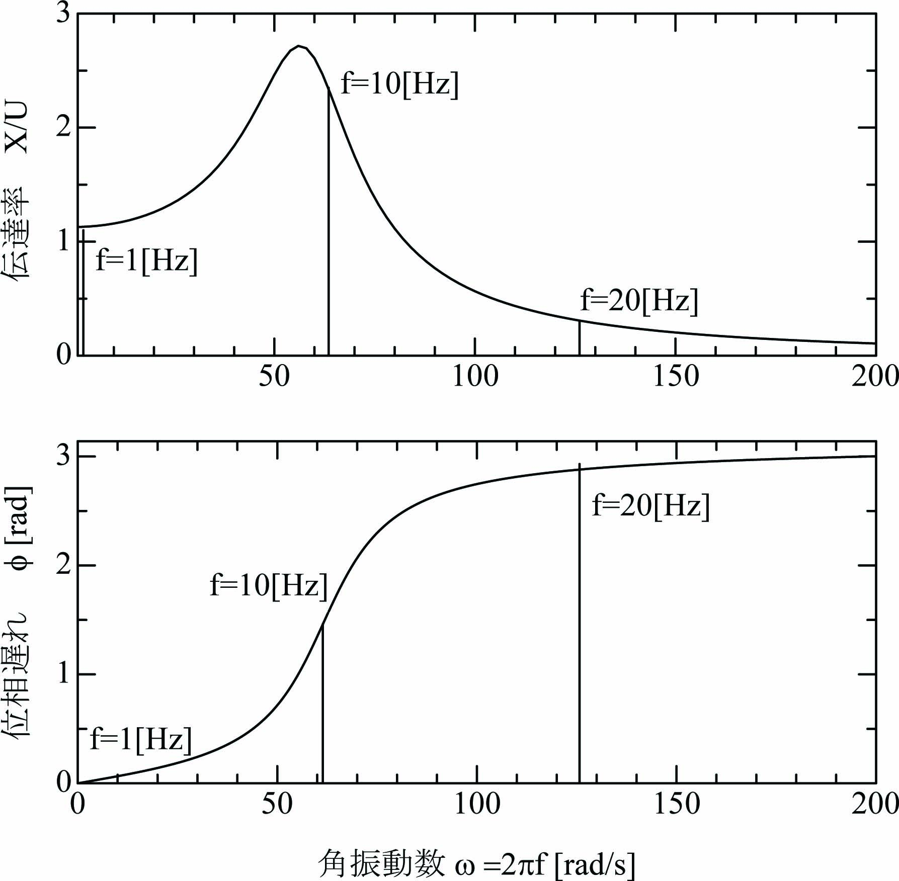

１自由度粘弾性振動系 の入力\(u(t) = U\sin\omega t\)として振動方程式を次式とします。
\begin{align} \ddot x + a \dot x + b x = bU\sin\omega t,~~~y=x. \label{eq:VivEq} \end{align}応答\(x\)の振幅は増減し、位相遅れが生じることを想定して、応答\(x\)を次式とします。
\begin{align} x(t) = X\sin(\omega t - \phi) \label{eq:Xeqt} \end{align}\(\dot x\)、\(\ddot x\)は次式となります。
\begin{align} \dot x(t) &=~ \omega X\cos(\omega t - \phi) \label{eq:Xdot}\\ \ddot x(t) &=~ -\omega^2 X\sin(\omega t - \phi) \label{eq:Xddot} \end{align}式\eqref{eq:Xeqt}、\eqref{eq:Xdot}、\eqref{eq:Xddot}を式\eqref{eq:VivEq}に代入して、整理します。
\begin{align} (b-\omega^2) X\sin(\omega t - \phi) + a\omega X\cos(\omega t - \phi) = bU\sin\omega t\label{eq:VibEq2} \end{align}\(p=b-\omega^2\)、\(q=a\omega\)として式\eqref{eq:VibEq2}を次式のように変形します。
\begin{align} X\sqrt{p^2+q^2}\{\frac{p}{\sqrt{p^2+q^2}}\sin(\omega t - \phi) + \frac{q}{\sqrt{p^2+q^2}}\cos(\omega t - \phi)\} = bU\sin\omega t\label{eq:VibEq3} \end{align}ここで、
\begin{align} \cos \gamma = \frac{p}{\sqrt{p^2+q^2}},~~~\sin \gamma = \frac{q}{\sqrt{p^2+q^2}} \label{eq:FormPQ} \end{align}としますと、式\eqref{eq:VibEq3}は次式となります。
\begin{align} X\sqrt{p^2+q^2}\{\cos \gamma\sin(\omega t - \phi) + \sin \gamma \cos(\omega t - \phi)\} = bU\sin\omega t\label{eq:VibEq4} \end{align}式\eqref{eq:VibEq4}に三角関数の加法定理(\(\sin(\alpha+\beta)=\sin\alpha\cos\beta+\cos\alpha\sin\beta\))を適用します。
\begin{align} X\sqrt{p^2+q^2}\sin(\omega t + \gamma- \phi) = bU\sin\omega t\label{eq:VibEq5} \end{align}式\eqref{eq:VibEq5}の両辺を比較して、次式が得られます。
\begin{align} X\sqrt{p^2+q^2} = bU,~~~\gamma - \phi = 0. \label{eq:Trans1} \end{align}式\eqref{eq:Trans1}に\(p=b-\omega^2\)、\(q=a\omega\)を代入し、\(\phi=\gamma\)、\(\tan\gamma=q/p\)を考慮して整理すると次式が得られます。
\begin{align} \frac{X}{U} = \frac{b}{\sqrt{(b-\omega^2)^2+(a\omega)^2}},~~~\tan \phi = \frac{a\omega}{b-\omega^2}. \label{eq:Trans2} \end{align}\(0 \leq \omega < \infty\)に対して\(a\omega/\sqrt{p^2+q^2} > 0\)なので、\(0 \leq \gamma < \pi\) です。
数値計算例で示したように、 \(f=1\)[Hz]では伝達率はほぼ1倍であり、位相遅れもほとんど0[rad]です。 \(f=10\)[Hz]では伝達率は約2.5倍であり、位相遅は約1.5(\(\fallingdotseq \pi/2\))[rad]となり、 共振に近い状況であることを示しています。 \(f=20\)[Hz]では伝達率は約0.25倍、位相遅は約2.9(\(\fallingdotseq \pi\))[rad]となり、 位相が反転する状況に近いことを示しています。
振動方程式を離散時間状態方程式に変換して数値計算で得られる結果と、 振動方程式を三角関数を使って解析して得られる結果が一致することが確認できます。